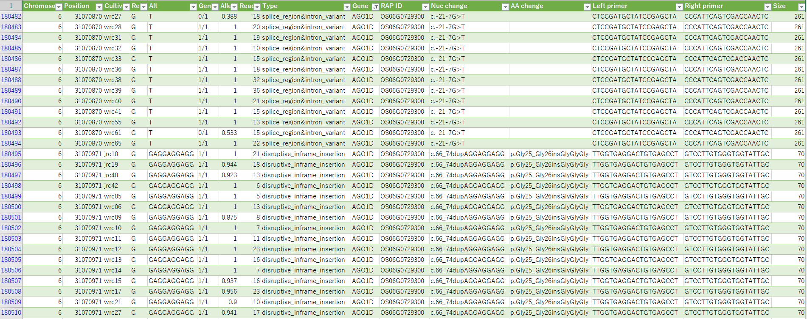
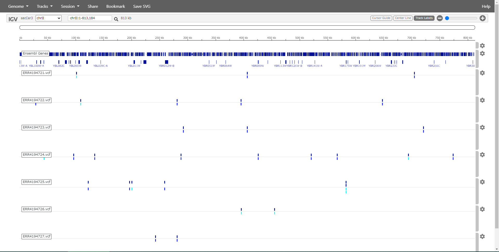
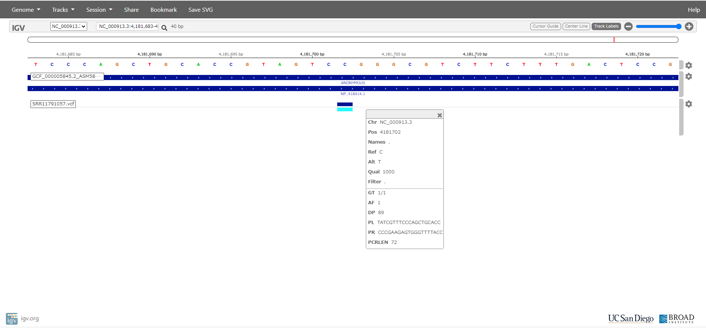

Polymorphic Edge Detection (PED) - An efficient polymorphism detector for NGS data
PED is a high-performance variant caller from short-reads of next generation sequencer, based on detection of polymorphic edge.
[Link to Japanese Page]
Application of PED
Click titles for detailed description.
List of polymorphisms in rice core collections
A list of polymorphisms among Japan and world core collection of rice distributed by NARO genebank. NGS data of core collection analyzed by PED program.
Detection of SARS-CoV-2 mutations
Tutorial of mutation detection from NGS short reads of RT-PCR products for SARS-CoV-2.
 Detection of polymorphisms from human NGS
Detection of polymorphisms from human NGS
Tutorial of mutation detection from NGS short reads of human.
 Detection of the target region cosegregated with target phenotype from Arabidopsis NGS for mutmap
Detection of the target region cosegregated with target phenotype from Arabidopsis NGS for mutmap
Tutorial of target region detection from NGS short reads of Arabidopsis.
 Bulked segregant analysis of rice
Bulked segregant analysis of rice
Rice individuals of early heading and late heading were bulked and sequenced.
The delta-SNP plot shows regions corresponding to the early and late heading.
Detection of polymorphisms from yeast NGS
Mutations in yeast phosphomutants
 Detection of polymorphisms from Bacillus subtilis NGS
Detection of polymorphisms from Bacillus subtilis NGS
Mutations in Bacillus subtilis
Detection of polymorphisms from Escherichia coli NGS
Mutations in Escherichia coli
Somatic variants of tumor [SNPs][SVs]
Deletion detection of Crispr/Cas9 treated cells [Mouse][Arabidopsis]
Detection of indels in iPS cells [Indels]
How to get PED
Scripts and Readme: https://github.com/akiomiyao/ped/
Docker: docker pull akiomiyao/ped
docker run -w /ped -v `pwd`:/work akiomiyao/ped perl ped.pl target=TARGET,control=CONTROL,ref=REFERENCE,wd=/work
Paper: Polymorphic edge detection (PED): two efficient methods of polymorphism detection from next-generation sequencing data (2019) BMC Bioinformatics 20(1):362
Contact
Akio Miyao, Ph.D (miyao@affrc.go.jp),
NARO